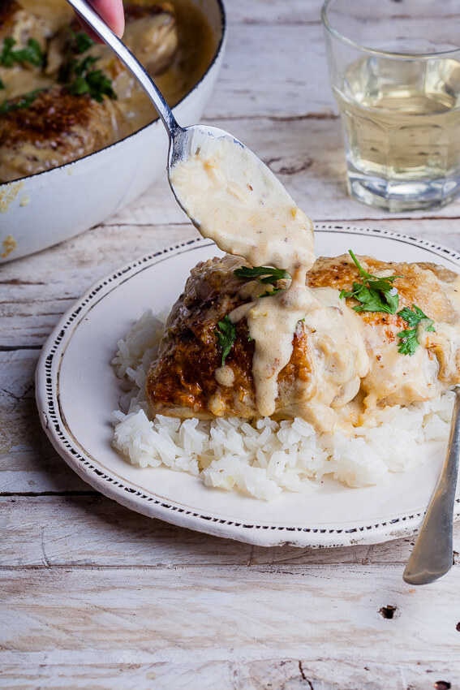

Creamy Dijon Chicken and Rice Recipe

Description: This is a great dinner recipe to impress your freinds with!
It does have a few more ingredients and cooking steps than the other recipes shown but it is worth it!
This recipe has a bold delicious flavor that is really brought out by the dijon mustard. This pairs great with rice but can easily be served over noodles or potatoes instead.
Dificulty: Medium
Cook Time: 30-45 minutes
Ingredients:
- 1lb of boneless skinless chicken thighs
- Bacon
- Jasmine Rice
- Heavy Cream
- Dijon Mustard
- Garlic
- White Wine
- Grated Parmesan Cheese
- Butter or Olive Oil
- Salt and Pepper
- Italian Seasoning
Cooking Steps:
- Preheat the oven to 425 degrees farenheit
- Add the chicken thighs to a pan and season with salt, pepper, and Italian Seasoning.
- When the oven has reached temperature, please the chicken into the center rack of the oven.
- The chicken will need to cook in the over for roughly 25 minutes, flipping halfway through.
- Measure out 2 cups of Jasmine Rice and 2 cups of water and place into the rice cooker.
- Use the rice cookers automated rice cooking setting.
- Place a pan on the stove over medium heat.
- Slice the bacon into pieces and place roughly 1/2 lb into the pan.
- With the bacon in the pan, add roughly 1 tsp of minced garlic to the pan.
- Cook the bacon until it has a crispy outer texture on all sides.
- With the bacon in the pan, pour in 1/4 cup of white wine to deglaze the pan. Cook until it has reduced by half
- Next add 1 and 1/2 cups of the heavy cream to the pan
- Next add 2 tbsp of dijon mustard to the pan.
- Next add the grated parmesan cheese and stir the sauce until all the ingredients combine and begin to cook down.
- Add additional seasoning to the sause per your liking!
- Once the sauce is done, simmer until the chicken and rice finish if they have not already!
- Add once serving of the rice, chicken, and sauce to a plate and enjoy!